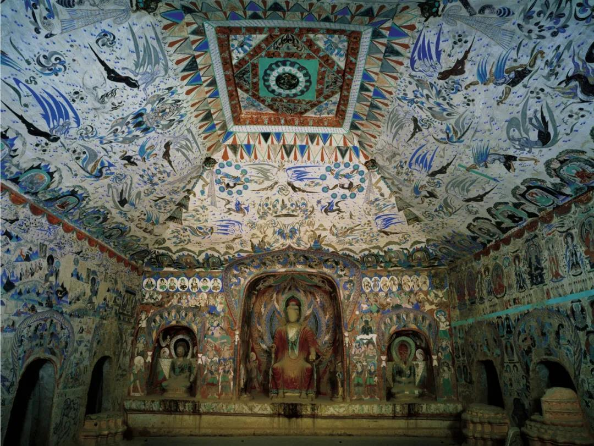
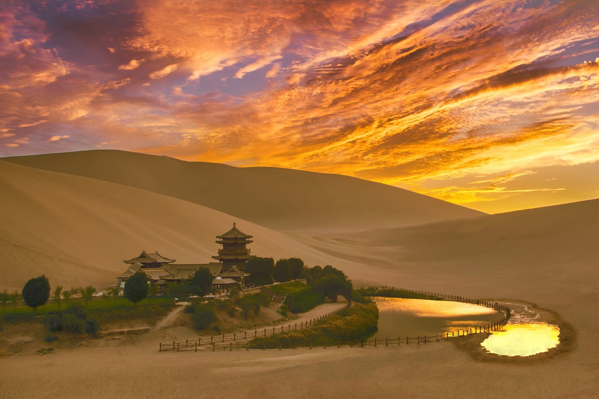
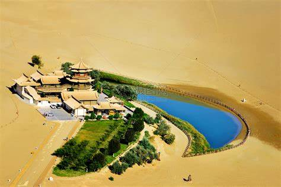
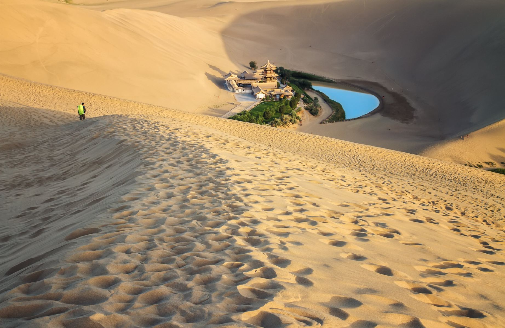

敦煌概况
敦煌莫高窟，位于我国甘肃省敦煌市东南的鸣沙山东麓，是一处集建筑、雕塑、壁画于一体的艺术宝库，被誉为“东方艺术明珠”和“世界艺术史上的奇迹”。这座石窟群不仅承载着中华民族千年的文化底蕴，更见证了丝绸之路上的历史变迁与文明交流。下面，让我们一同走进敦煌莫高窟，探寻其独特的艺术魅力和悠久的历史故事。
详情请访问敦煌莫高窟
文化瑰宝
- 莫高窟：世界上现存规模最大、内容最丰富的佛教艺术宝库
- 敦煌壁画：展现了中国古代绘画艺术的辉煌成就
- 敦煌飞天：中国古代艺术中的经典形象
- 敦煌文书：记录了古代丝绸之路的繁荣与交流
自然风景
   敦煌不仅有丰富的文化遗产，还有壮美的自然景观。鸣沙山与月牙泉相依相伴，形成了"沙漠奇观"；阳关和玉门关见证了古代丝路的繁华与沧桑。
敦煌艺术
敦煌艺术是中国古代艺术的瑰宝，包括壁画、彩塑、建筑等多种形式。莫高窟保存了从十六国到元代近千年的各类艺术作品，展现了中国古代艺术的发展历程和成就。敦煌壁画题材广泛，技法精湛，色彩绚丽，是研究中国古代绘画史的重要资料。
具体的信息
| 名称 | 简介 | 门票 |
|---|---|---|
| 莫高窟 | 莫高窟：世界上现存规模最大、内容最丰富的佛教艺术宝库 | 140元一张 |
| 鸣沙山 | 鸣沙山：鸣沙山以“沙鸣”现象著称。当人们从沙山巅顺陡立的沙坡下滑时，流沙会发出各种声响，初如丝竹管弦，继若钟磬和鸣，进而金鼓齐鸣，轰鸣不绝于耳。 | 168元一张 |
| 月牙泉 | 月牙泉:月牙泉位于甘肃省敦煌市西南5公里的鸣沙山北麓,因其形状酷似一弯新月而得名。古称“沙井”，又名“药泉”，清代始称“月牙泉”，是敦煌八景之一。 | 148元一张 |